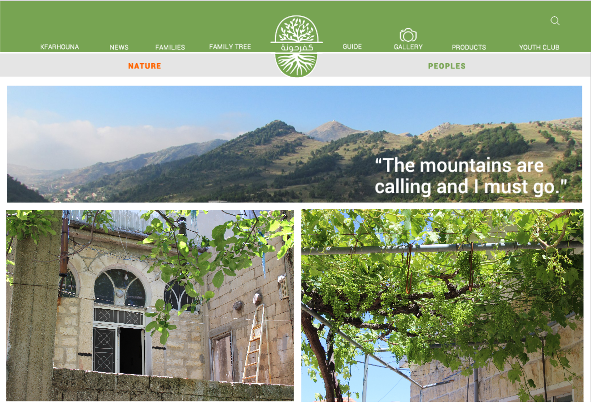
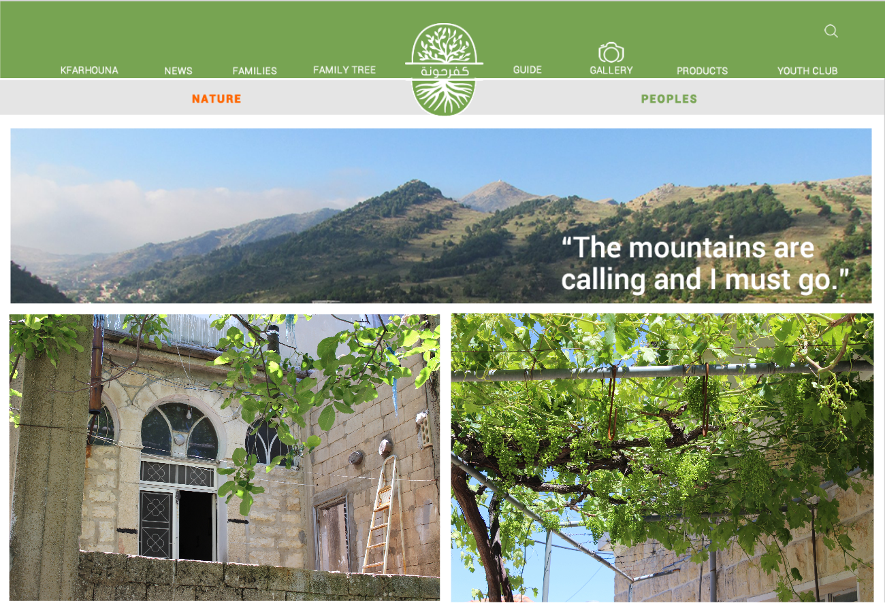

Kfarhouna Village
june 2016
University project Alba
Kfarhouna is a traditional village located in the south of Lebanon.
This was my end of studies project at the Académie Libanaise des Beaux-arts (ALBA). We had to choose a topic that interests us and create the concept and the website. I decided to choose my village of origin as a subject. My objective was to create a website whereby I would encourage the natives of Kfarhouna for more frequent visits, connect the people with each others, and find the native of this village who had to emigrate from Lebanon.

 
